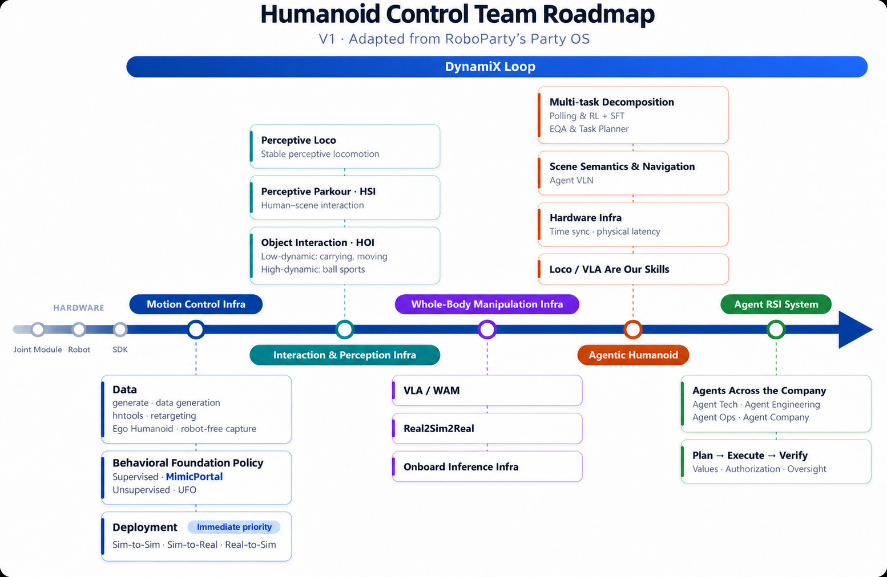
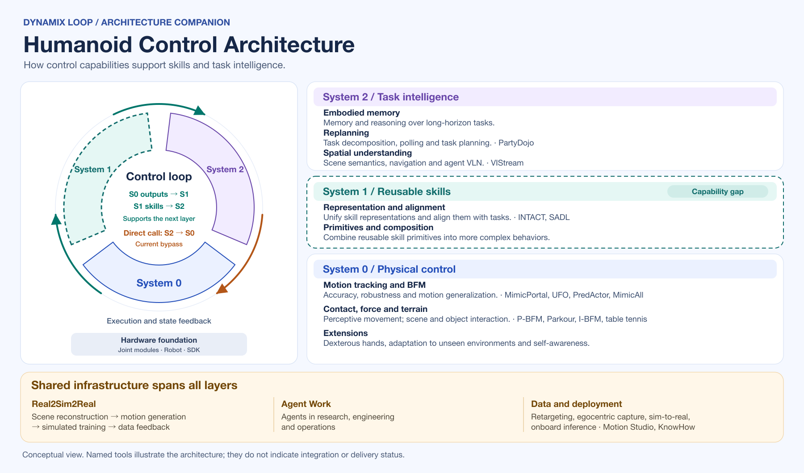

Humanoid robotics · Lumo
About DynamiX Loop
DynamiX Loop develops a humanoid control stack for Lumo, from motion data and physics-based control to reusable skills and task intelligence.
Capability roadmap
Roadmap
Immediate priority: build the deployment foundation for sim-to-sim, sim-to-real, and real-to-sim. The diagram shows how capabilities build on one another, without assigning dates.


System architecture
Control hierarchy
System 0 executes motion and provides the outputs that System 1 would turn into reusable, composable skills. System 2 would use those skills for planning and replanning. While System 1 remains a gap, System 2 can invoke System 0 directly; shared infrastructure connects data, simulation, deployment, and hardware feedback across all layers.


Research and engineering
See the repositories behind the roadmap and the open slots we’re working toward.
Explore our projects